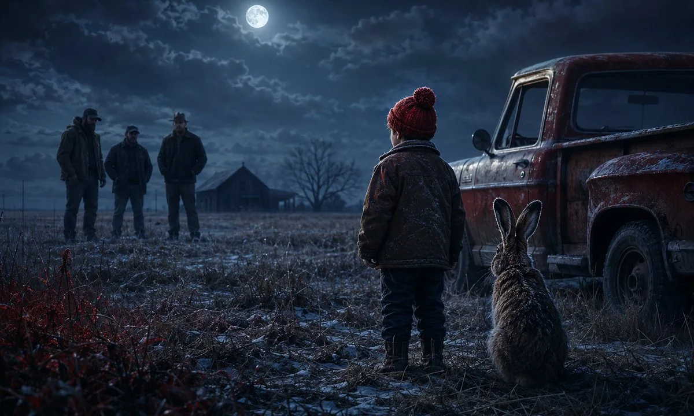

Corría 1982 y con 6 años recién cumplidos me había convertido en el típico nene de departamento de Belgrano. Hijo único, blanco como un papel, me pasaba horas jugando solo e inventando historias, cuentos y personajes con los que hablaba a diario para llenar el vacío de esa soledad interior. El divorcio de mis padres, la falta de imagen paterna en casa y la sobreprotección de mi madre me habían convertido en un debilucho, delicado, quejoso, lloricón… Supuestamente, según me contaron.
Creo que a mi viejo le agarró culpa, remordimiento y tomó la decisión de hacerme más macho haciendo un viaje de caza y pesca con sus amigos del trabajo y sus hijos.
Una aventura soñada por cualquier pibe: Cuatro Días paseando por los campos de buenos aires en la zona de laguna Alsina cazando liebres y antílopes con armas especiales, miras telescópicas, escopetas, trajes camuflados y también pescando en cuanto arroyo se nos cruzara en el camino.
Viajamos en un jeep mercedes benz 4 adultos y 5 chicos apretados y sin cinturón de seguridad en la caja cubierta de atrás. (Eran otras épocas). Dormíamos en la estación de tren abandonada de un pequeño pueblo llamado Bonifacio. Usábamos bolsas de dormir todos tirados en el piso.
Pero antes se jugaba al truco, se contaban chistes verdes, se preparaban las armas y las cajas de pesca para el día siguiente y nadie se bañaba durante esos cuatro días. (Solo había un caño del cual caía agua helada para mojarse un poco) Una gran aventura, tiempo de calidad con mi papá.
Me acuerdo que la primera noche mi viejo junto a todos los chicos y nos dijo: “El primero que vea la luz del sol grite ARRIBA LA COMPAÑÍA! Así nos levantamos y salimos tempranito!”
Para que…. No se le hace eso a un niño. Me comía la ansiedad y no cerré un ojo en toda la noche! Y a eso de las tres de la madrugada del primer día vi la luz de un farol de la calle y desperté a todos.”ARRIBA LA COMPAÑÍA!”. “Volvé a dormir Hernancito son las 3 de la mañana” me dijo mi viejo... se escucharon quejas y risas de los otros chicos quizás como un presagio de lo que iba a venir.
Al día siguiente el grupo de niños, como suele ocurrir, asignó roles y líderes y a mí me tocó el rol de “pendejo pelotudo” …y me tomaron de punto. No solo era el más chiquito con solo 6 años sino que le tenía miedo a todo, no me gustaba ensuciarme, y era algo, como se dice, delicado. Blanco perfecto para una bandita de nenes malcriados que me pelotudearon durante 48 horas sin parar hasta hacerme llorar. Me la bancaba, y no le decía nada a nadie, ni a mi viejo. Pero bueno la pasaba mal. Comíamos en un hotel viejo comida casera que no había probado nunca y no me gustaba, (Morcilla, puchero, sopa de verduras) y no había otra cosa, no había nada. Los chicos me sacaban la comida, me cargaban, todo el tiempo. Siempre en voz baja para que los viejos en la otra mesa no escucharan. Era como una lenta y silenciosa tortura, ellos cagados de risa, y yo…. Una olla de agua en ebullición.
La segunda noche tocaba salir a cazar liebres en una F100 con caja y modificada con un reflector en el techo para buscarlas. Dos grados bajo cero y los niños en la caja de la camioneta cagados de frío.(otras épocas) El pacto era así, los niños no podían disparar pero si podían bajar, ir a buscar las liebres y subirlas a la caja. Teníamos turnos y todos íbamos a bajar. Yo tenía mucho miedo, nunca había hecho nada así y los demás chicos, como los perros, olieron mi adrenalina y durante toda la noche me boludearon: “No te vas a animar a bajar”, “Te vas a poner a llorar”, “Te vas a hacer pis”, No la vas a poder agarrar…. Cagon, puto, nena… etc, etc, etc.(Repito, eran otras épocas…supuestamente)
Uno a uno los vi bajar a buscar las liebres, las subían a la camioneta y comparaban el tamaño de la presa como si fuera un “a ver quien la tiene más grande”. “Ahora te toca a vos pendejo”. Me dijo Franco mirándome a los ojos y con una sonrisa grande de mierda, sabiendo que estaba cagado en las patas y que probablemente no me fuera a animar. BANG! Dispara Edgardo, el papá de Franco le dió a una liebre que estaba paralizada y muerta de miedo frente al reflector. Igual estaba yo ante la mirada de toda la banda. Me tocaba a mi. “Dale Hernancito, anda a buscarla” me gritó mi papá desde el calor de la doble cabina, “anda a buscarla! “Dale hernancito” Me dijo Franco mientras los demás se reían. “Dale cagón a que no te animas”. Miré a las liebres muertas y ensangrentadas en la caja que me miraban sin mirar con esos ojos de muñeca, orejas grandes y piel suave.
Respire hondo y me baje de la caja. Tenía puesto Jeans, campera, botas de lluvia, y un gorro de lana rojo que me había tejido mi abuela y por el cual ya me habían gastado bastante. Salté por la parte de atrás de la camioneta en plena oscuridad y me caí. Me mojé toda la ropa con el rocío nocturno. Tenia las manos y los pies congelados y quería llorar. Escuché a Franco decir riéndose… “es un boludo”…Y por un segundo dudé en decirle a mi papá que no quería… que me daba miedo. Veía el vapor salir de mi boca y sentía el frío en todo el cuerpo. “Dale chango! No tengas miedo! Aventuro mi viejo con una sonrisa.
Tomé coraje y arranqué. Corrí siguiendo la luz del reflector y busqué entre el pasto el cuerpo muerto de la liebre. No la encontraba. El olor a gasoil quemado de la F100 era insoportable. “No la encuentro papá”! Grité desesperado. “Dale Hernancito así seguimos, apúrate” Me dijo mi viejo sin mucha paciencia mientras escuchaba la risa de los pendejos de mierda venir de la caja. “Dale Hernancito me gritaron a coro”. Un coro de Gremlins muertos de risa. Caminé en círculos buscando la presa y finalmente la encontré. No se movía, no respiraba y tenía algo de sangre en el lomo. Dudé otra vez por un instante y muerto de miedo pero finalmente me agaché y la agarré de las orejas. Podía sentir el calor del cuerpo de la liebre en mi mano y sus suaves orejas y me dio mucha impresión. Quería soltarla… pero no podía…. Era mi oportunidad, mi oportunidad de dar vuelta el partido.
Entonces imitando lo que habían hecho los demás niños la levanté por encima de mi cabeza, por más que fuera muy pesada para mi brazo y chorreara algo de sangre por mi mano. Se escucharon aplausos desde la camioneta, de adultos y niños. Lo había logrado. Me había ganado el respeto.
Mientras caminaba sonriente de vuelta a la camioneta la liebre no tuvo mejor idea que moverse y patalear. ¡La muy hija de puta todavía estaba viva! Me asuste mucho, la solté en el piso y grité..llevándome las manos sucias al pecho entrelazadas con mucha impresión. Encima el grito fue agudo, de esos que le salen a un nene de 6 años, muerto de miedo, hambre, frío, cansancio, sucio, y al borde del llanto. Se volvieron a escuchar las risas desde la camioneta, pero esta vez no provenían solo de los niños sino también de los adultos.
Y entonces algo pasó en ese momento, algo hizo click o boom. Algo se rompió…. quizás por la bronca de no tener un hermano mayor que me defendiera, o por la separación de mis padres, y obviamente por haber sido blanco de todas las crueldades durante ya tres días. El agua de la pava hirvió. Me acordé de algo que solo había visto hacer al dueño de aquel campo, el tipo más rudo y malo que jamás había conocido. Tomé la liebre de las orejas y la empecé a golpear contra el poste de una tranquera. Tuck, tuck tuck hacia la cabeza de la liebre ya muerta contra el poste. Tuck, tuck, tuck, tuck, tuck. La sangre empezó a salpicar mi cara, mi campera, mis manos y mi gorro. Tuck, tuck, tuck. Estaba llorando pero la adrenalina secó mis lágrimas. Tuck, tuck, tuck, tuck…. La seguí golpeando hasta que escuche la voz de mi papá que se bajó y me tomó suavemente de los hombros como quien despierta a un sonámbulo. “Ya está Hernan… ya está muerta” me dijo. Tuck, tuck, tuck… (silencio)
Ahora solo se escuchaba el sonido del motor gasolero de la F100 y mi respiración, no había más risas. Estaba jadeando, muerto de calor en unos 3 grados bajo cero.. Abandoné a mi papá y lo dejé solo mirándome en la tranquera… quizás por venganza…ahora quedate vos solo. Fui hacia la parte de atrás de la camioneta y tiré la liebre ensangrentada con las demás. Era la más grande de todas. Mi cara, mis manos y mi ropa salpicada de sangre fresca. Me saque los mocos de la nariz con el dorso ensangrentado de la mano y los mire a todos a los ojos. Cual carrie antes de la escena final. Y solo hice silencio. “tktktktktktktktktktk” hacia el bronquítico motor gasolero. Nadie dijo nada. Volvimos a la estación. Nadie me boludeo más durante los próximos dos días. La pasé mejor. Me había convertido en un hombre. Supuestamente
Relato breve · Infancia y masculinidad
La liebre y el hombre

Texto de Hernán Laperuta. Para consultas editoriales, adaptaciones o derechos de representación, escribí a través del formulario de Teatro Esencial.